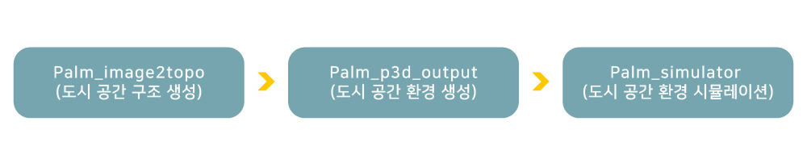

화재 시뮬레이션 Fire Dynamics Simulator (FDS)는 화재가 발생한 공간을 설계하여 화재의 진화를 구현하는 시뮬레이션 프로그램으로 미국의 National Institute of Standards and Technology 와 핀란드의 VTT Technical Research Centre에서 개발한 오픈소스 소프트웨어 FDS를 활용하여 보다 이해하기 쉽고 편하게 사용 가능하도록 GUI형식으로 제작하였습니다.
FDS 사용 프로세스는 아래와 같으며, 각각의 모듈을 진행하여 화재 진화 시뮬레이션을 동영상으로 저장 가능합니다.
Fire Dynamics Simulator (FDS) is a simulation program that designs the space where a fire breaks out and is extinguished. FDS developed in GUI format to make it easier to understand and use using open source software FDS developed by the National Institute of Standards and Technology in the US and VTT Technical Research Centre in Finland. The process of using FDS is as below, and the fire extinguishing simulation can be saved as a video by proceeding with each module.
2. Process
- 방법1 -
- 방법2 -
3. Github Link
지진 대피 시뮬레이션
Earthquake Evacuation Simulator
1. Introduction
Earthquake Evacuation Simulator 는 지진이 발생한 상황을 설계하여 사람 (agent) 가 대피하는 시뮬레이션 프로그램오픈 소스 프로그램 Gama 와 Simcenter 를 활용하여 보다 이해하기 쉽고 편하게 사용 가능하도록 GUI형식으로 제작Earthquake Evacuation Simulator 사용하였습니다. 프로세스는 아래와 같으며, 각각의 모듈을 진행하여 지진 대피 시뮬레이션을 동영상으로 저장 가능합니다.
Earthquake Evacuation Simulator designs the earthquake situation to make agents evacuate. Earthquake Evacuation Simulator developed a GUI format that is easy to understand and use using open source programs called Gama and Simcenter. The simulator's process is as below, and the Earthquake evacuation simulation can be saved as a video by proceeding with each module.
2. Process
3. Plotly를 활용한 지진 시뮬레이션 피해지역 지도 시각화
Figue 2: 송파구 DL 시각화 예시
송파구 데이터를 이용해서 도출된 DL(Damange and Loss) CSV파일의 LossRatio를 plotly의 density map을 이용하여 시각화 하는 작업 수행
4. 세부간 통합 시뮬레이션 환경 구축을 위한 지진대피 시뮬레이션 모듈 고도화
세부간 입출력 데이터 연계 환경
- 외부 데이터 입력을 위한 환경 구축
- 단순 지역(경희대학교) 좌표 활용을 위한 인터페이스 구축
우선순위 고려한 대피소 추천 모듈 알고리즘 검증
- 지진으로 인한 다수지역을 고려한 대피소 추천 기능 검증
개발된 모듈 에디슨 반영
에디슨에 반영을 통한 모듈 성능 확인 및 시각화 (상단:이전모듈, 하단: 새모듈)
Figue 4: 단수징역을 고려한 시뮬레이션 결과 비교
4. Github Link
도시 혹한/혹서 시뮬레이션
Urban Cold/Heat Simulation
1. Introduction
PALM Simulator 는 다양한 재난 상황이 발생한 상황을 설계하여 지도상의 피해 정도를 확인할 수 있는 시뮬레이션 프로그램으로 오픈 소스 프로그램 PALM 을 활용하여 보다 이해하기 쉽고 편하게 사용 가능하도록 GUI형식으로 제작하였습니다. PALM 사용 프로세스는 아래와 같으며, 각각의 모듈을 진행하여 재난 시뮬레이션을 동영상으로 저장 가능합니다.
PALM Simulator is a simulation program that can check the extent of damage on the map by designing various disaster situations. PALM Simulator developed a GUI format that is easy to understand and use using an open source program called PALM. The process of using the PALM simulator is as below, and the disaster simulation can be saved as a video by proceeding with each module.
2. Process

개인화 애플리케이션
Personalization application
1. Introduction
재난대피 행동 유도 어플리케이션 FELLOWS는 다양한 지진 관련 데이터를 수집하여 실시간 검색어, 대피소 정보, 지진 발생 현황, 대피 가이드 등을 제공합니다.
2. Description of the section
1) 해시태그 섹션 / Hashtag section
인스타그램 graph api를 활용하여 ‘지진' 키워드를 기반으로 한 연관 태그를 수집하여 다음과 같이 두 가지 유형의 차트를 제공합니다.
We utilize the Instagram graph API to collect relevant tags based on the keyword 'earthquake' to provide two types of charts.
1.최근 / Recent
인스타그램 graph api의 해시태그 검색/recent_media 엔드포인트를 활용하여 최근 3일 동안 ‘지진' 키워드를 통해 수집한 태그 갯수를 수합하여 1-10위까지 순위를 매겼습니다.
Search for a hashtag in Instagram graph API/ Leverage the recent_media endpoint to aggregate the number of tags collected through the keyword 'earthquake' in the last three days and rank them from 1-10th.
2.인기 / Public interest
인스타그램 graph api의 해시태그 검색/top_media 엔드포인트를 활용하여 ‘지진' 키워드와 관련된 가장 인기 있는 게시글의 태그를 선별하고 수합하여 1-10위까지 순위를 매겼습니다.
Search for the hashtag in Instagram graph API/ Leverage the top_media endpoint to single out and aggregate tags from the most popular posts related to the keyword 'earthquake' and rank them from 1-10th.
2) 대피소 찾기 섹션 / Shelter Finding Section
행정 안전부에서 제공한 지진 옥외대피장소 정보를 가공하여 json 형태로 데이터베이스화 하였습니다. 스마트폰에 내장된 Geolocation API를 활용해 사용자의 현재 위치 기준 1km, 1.5km, 2km 반경의 대피소 데이터를 DB 파일에서 추출하고 보여줍니다. 대피소 정보는 거리순/리스트 형태로 제공되며 내 위치에서 가까운 순서대로 정렬하여 보여줍니다. 대피소 정보를 터치하면 해당 위치를 클립보드에 복사할 수 있고 이를 지도 어플에서 검색 시 유용하게 사용할 수 있습니다.
The earthquake outdoor evacuation shelter information provided by the Ministry of Public Administration and Security was processed and converted into a database in JSON format. Using the Geolocation API built-in in the smartphone, it extracts and shows shelter data from the user's current location in a radius of 1km, 1.5km, and 2km from the DB file. Shelter information is provided in order of distance/list format and is displayed in order of proximity to the user's location. If the user touches the shelter information, the user can copy the site to the clipboard, which can help search in the map application.
3) 히스토리 섹션 / History Section
공공데이터 포털에서 제공하는 지진 발생 현황 API를 활용하여 한반도 주변에서 발생한 지진 정보를 보여줍니다. 현재 시각을 기준으로 24시간 내에 발생한 지진 데이터를 시간, 위치, 국내에 끼칠 영향 및 피해 정도로 나누어 알 수 있습니다.
It shows earthquake information in the vicinity of the Korean Peninsula by using the earthquake occurrence status API provided by the public data portal. Earthquake data that occurred within 24 hours of the current time can be divided into time, location, and damage effect in Korea.
4) 대피 가이드 섹션 / Evacuation Guide Section
행정안전부에서 제공하는 지진 국민 행동요령 소책자를 기반으로 만들었으며, 지진 대비, 연령, 장소, 상황별 대피 요령을 세분화 하여 지진 대처 가이드를 제공합니다.
It was created based on the earthquake evacuation instruction booklet the Ministry of Public Administration and Security provided. It provides earthquake response guides by subdividing evacuation guidelines by earthquake preparedness, age, location, and situation.
자료 출처: https://www.mois.go.kr/frt/bbs/type001/commonSelectBoardArticle.do;jsessionid=QupFzl4vWL0XyfbFSyOpTVyJ.node50?bbsId=BBSMSTR_000000000015&nttId=83847
재난 프로젝트 전체보기
View all
1. Introduction to the Disaster Project
본 프로젝트에서 개발한 어플리케이션은 크게 1) 도시재난 시뮬레이터 2) 대피 시뮬레이터 3) 개인화된 비주얼라이저로 구분되어 있습니다.
도시재난 시뮬레이터는 크게 3가지로, 화재, 지진, 도시 혹한/혹서의 3가지 도시재난 상황을 시뮬레이션 해볼 수 있습니다. 지진과 도시 혹한/혹서 시뮬레이터는 GIS Data를 이용하였습니다.
대피 시뮬레이터는 GIS 데이터를 이용해 네트워크화된 도시공간을 생성하고 이 공간에서 에이전트들의 대피를 모의합니다. 지진 시뮬레이터와의 연동을 통해, 지진의 영향에 따른 피해가 도시공간에 반영될 수 있도록 하였습니다.
개인화된 비주얼라이저는 지진 시뮬레이터 및 대피 시뮬레이터와 연동된 상용화 가능한 어플리케이션입니다. GIS 데이터를 시각화하고 시뮬레이션 결과를 반영해 대피소를 추천해줍니다.
The application developed in this project is classified mainly into three categories: urban disaster simulator, evacuation simulator, and personalized visualizer. Urban disaster simulator provides three types of disaster simulators: fire, earthquake, and urban cold/heat. Earthquake and Urban/heat simulators used GIS Data. The evacuation simulator generates networked city space using GIS data and makes agents simulate this space. The earthquake simulator can reflect earthquake damage to the city space. The personalized visualizer is a commercially available application linked to the seismic simulator and the evacuation simulator. This application recommends evacuation shelters by visualizing GIS data and reflecting the simulation results.
근래 다양한 형태의 인간 및 자연에 의한 재난 상황에 의해 도시민의 삶이 지속적으로 위협 받고 있습니다. 본 프로젞트는 도시재난 및 대피 시뮬레이터와 시뮬레이션 결과를 시각화할 수 있는 개인화 애플리케이션의 개발 및 검증, 그리고 사용성 개선을 통해 국가 재난 관리, 재난 교육, 연구 등 다방면의 활용될 수 있는 도시 재난 관리 통합 프로그램을 구축하고자 합니다. 또한 관련 소스 코드 및 다큐멘테이션, GIS 데이터, 교육 및 연구사례 등을 공개하여 활용 커뮤니티를 활성하고자 합니다.
Recently, the lives of urban residents have been continuously threatened by various types of human and natural disasters. This project aims to develop and verify personalized applications that visualize urban disaster and evacuation simulators and simulation results and build urban disaster management that can be utilized in various fields such as national disaster management, disaster education, and research. This project also intends to promote the utilization community by disclosing related source code, documentation, GIS data, education, and research cases.
2. Application Overview
교 육 & 학 습
Education / study
Introduction
연구
study
Introduction
특허
- Patent -
Introduction
1. 그래픽 유저 인터페이스 기반의 화재 시뮬레이션 서비스 제공 방법 및 컴퓨터 프로그램
(KR, 등록번호: 10-2147256, 2020-08-18)
2. 그래픽 유저 인터페이스 기반의 도시 지진 대피 시뮬레이션 방법 및 장치
(KR, 등록번호: 10-2269142, 2021-06-18)
논문
Paper
1. Introduction
2. 국내외 학술대회 발표
-
슈터 컴퓨팅 학회 (KSC & KREONET Conference 2019) 발표
Figure 1: 슈퍼 컴퓨팅 학회 포스터 및 사연 발표 자료
2019년 9월 5일부터 6일까지 열린 슈퍼컴퓨팅 학회로써 인공지능, 빅테이터, 사물인터넷, 슈퍼 컴퓨팅 산업체 활용, 신기술 트렌드
등 4차 산업혁명의 핵심 기술과 접목된 4차 산업혁명 시대의 슈퍼 컴퓨팅 관련 내용 발표
Session 2: EDISON 커뮤니티 포럼 중 공학 & 플랫폼 부문으로 고시원 복도 폭 변화에 따른 화재 시뮬레이션 프로젝트 발표


.jpg)
.jpg)